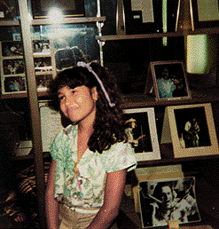

Su Vida
(Nombre artístico de Selena Quintanilla Pérez; Lake Jackson, 1971 - Corpus Christi, 1995) Cantante estadounidense. El 16 de abril de 1971 nació en la localidad tejana de Lake Jackson Selena, una de las hijas de una familia feliz y estable de origen hispano establecida en la zona. No era más que una niña cuando su padre, que había sido músico, se dio cuenta de la gran voz que poseía. A partir de entonces centró todos sus esfuerzos en encaminar su vida hacia la música. Los primeros pasos de Selena como intérprete se remontan a su infancia, cuando su padre la hacia actuar con sus hermanos en el restaurante que dirigía. Así nacieron Selena y los Dinos, grupo con el que la cantante hizo su estreno comercial a los 12 años. El éxito acompañó a los niños desde sus inicios y posibilitó que en 1984 apareciera su disco de debut, Mis primeras grabaciones. Era el precoz inicio de una brillante carrera musical que sólo pudo parar la muerte.
Selena entra en la adolescencia cantando con sus hermanos y participando en diversos shows hasta que su vida cambia en 1989. Es en ese año cuando surge el sello latino EMI y su presidente, Behar, la ve en una de sus actuaciones mientras busca cantantes para incorporar a su discográfica. Descubre su potencial y decide contratarla. Ese mismo año ve la luz su primer trabajo profesional, Selena. Prácticamente a partir de este disco aparece cada año en el mercado un nuevo disco: Ven conmigo, Entre a mi mundo, Live... Es una mujer estadounidense y habla habitualmente en inglés, pero curiosamente canta en español, tal y como le enseñó su padre cuando era una cría. Vestida con tops que recordaban el estilo atrevido de Madonna en aquella época y con canciones típicamente tejanas pero adaptadas al público de cada zona, el éxito de Selena creció sin parar. En 1993 consiguió un Grammy al mejor álbum de música mexicano-americana por Live y al año siguiente publicó su disco Amor prohibido, donde se escuchaban canciones que se hicieron famosas al instante de aparecer: Bidi Bidi Bom Bom y No me queda más, entre otras.
El sueño de Selena se hace realidad: triunfa en el mundo típicamente machista de la canción tejana y consigue entrar en México como una verdadera número 1, algo prácticamente imposible para cualquier cantante de Tejas. En el año 1995 disfruta de su éxito al grabar Dreaming of you, un disco del que vende más de dos millones de copias, y protagoniza un multitudinario concierto en la ciudad de Houston. Son los últimos trabajos de una carrera donde se incluyen hits internacionales como I Could Fall in Love o el mismo Amor Prohibido, cuyo sencillo del mismo nombre llegó al número 1 de las listas.
El éxito de Selena se vio roto el día 31 de marzo de 1995, cuando tenía tan sólo 23 años. La presidenta de su club de fans, Yolanda Saldívar, la asesinó por motivos económicos. Ambas vivían en Corpus Christi y se conocían desde hacía tiempo. Selena confió en ella para dirigir algunas de sus tiendas, pero su padre se dio cuenta de que la estafaba. Después de una serie de problemas y desacuerdos, la cantante fue a visitarla ese día para hablar cara a cara y recibió un disparo por la espalda. El 3 de abril se celebraban unos multitudinarios funerales en su memoria que atrajeron a público de diversas ciudades. Había nacido un mito cuya vida fue llevada a la pantalla por la actriz Jennifer López.
Después de la muerte de Selena se publicaron diversas recopilaciones de sus trabajos que incluían temas en inglés (Siempre Selena y All my hits) y la venta de sus discos creció espectacularmente. Su repercusión fue tal que la revista People Texas le dedicó su portada una semana después de morir e incluso un número conmemorativo. Numerosas figuras musicales de carácter internacional, como por ejemplo Talía, Gloria Estefan y Carlos Vives han participado en homenajes póstumos a su memoria.
